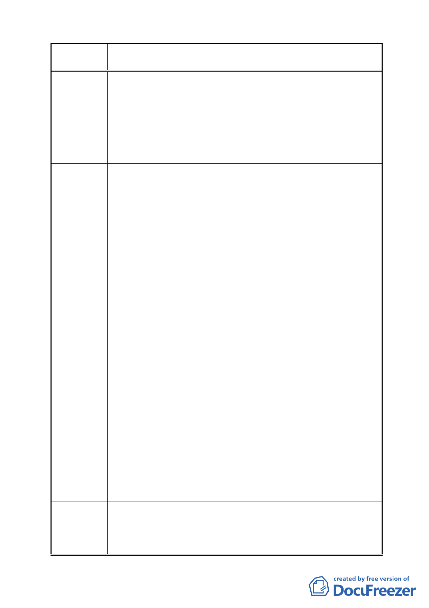

案 名 變更臺北市南港區鐵路地下化沿線土地主要計畫案
建議辦法
E.應放寬相關「土地使用分區法令」中針對「教堂」的規定。
「教堂」乃是「多功能的集會場所」，與文康設施極為類似，
對周圍環境的影響等同或小於「第十六組文康設施」。故教
堂應比照「文康設施」的標準來審核。「教堂」按土地及建
築物之使用，依其性質、用途、規模，應可以歸類於「第十
六組文康設施」。如此，是符合《台北市土地使用分區管制
規則》第五條的原則。
I.關於台北市政府民政局部分
A.「台北市宗教事務之財團法人」不可等同於「宗祠」及「宗
教建築」。根據《民法》，此乃「法人」的一種，不是建築物。
（《民法》第一編第二章第二節）
B.《民法》第 29 條 法人以其主事務所之所在地為住所。「台
北市宗教事務之財團法人」的「主事務所」可以是「辦公室」，
也有很多其他的選擇；「宗祠」及「宗教建築」只是其中之
一。故不可將「台北市宗教事務之財團法人」等同於「宗祠」
及「宗教建築」。
C.請修改新設立「台北市宗教事務之財團法人」財產總額需達
新台幣 2,000 萬元整的限制。既然「台北市宗教事務之財團
法人」的「主事務所」可以是「辦公室」或其他的選擇，而
許多「台北市宗教事務之財團法人」的主事務所不見得是「宗
祠」及「宗教建築」，就不需要 2,000 萬元的規模即可運作，
故應降低或廢止此限制。
D.台北市政府應鼓勵宗教團體設立「台北市宗教事務之財團法
人」，不應以 2,000 萬元的門檻作為限制。宗教團體設立財
團法人，台北市政府便可依法管理，杜絕詐財等弊端。
E.如 97 年 10 月 22 日發文的《北市民三字第 09733152500 號》
民政局的來函，敬請貴局說明「內政部 96 年 8 月 28 日台內
民字第 09601337531 號函」的內容。因為在《北市民三字第
09733152500 號》民政局的來函《說明一》中，所提的《台
北市財團法人暫行管理規則》和《民法》並未限定 2,000 萬
元方可設立「台北市宗教事務之財團法人」。《台北市財團法
人暫行管理規則》第 37 條也說此規則不適用於宗教事務之
財團法人。
1.本教會和居民實在不想拆遷，但若必須執行，終無轉圜的餘
地，懇請規劃並提供「土地」、「建物」給本教會永久所有。
2.本教會拆遷期間，請求提供全天候免費使用的場所。
3.懇請台北市都市發展局加緊修改相關「土地使用分區法令」。
- 29 -